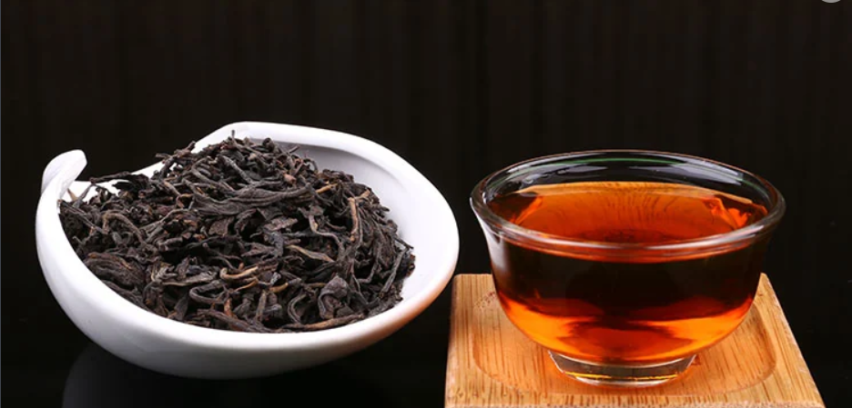

产品展示
精选六堡茶系列，传承百年工艺，品质保证

热销

限量

新品

礼盒
春茶
珍藏
秋茶
尊享
六堡茶的特点
独特的品质特点
六堡茶是中国传统的特种黑茶，产于广西梧州市苍梧县六堡镇一带。它具有"红、浓、陈、醇"的特点，汤色红浓，香气独特，滋味醇厚，回甘持久。
六堡茶的独特之处在于其越陈越香的特性，经过适当的陈化，茶叶中的物质会发生变化，形成独特的陈香和药香，滋味更加醇厚甘爽。
制作工艺
六堡茶的制作工艺独特，主要包括采摘、晒青、杀青、揉捻、渥堆发酵、烘干等工序。其中渥堆发酵是形成六堡茶特有品质的关键工序。
陳記六堡茶坚持传统工艺，每一道工序都严格把控，确保茶叶的品质和口感达到最佳状态。

六堡茶冲泡指南
1
准备茶具
建议使用紫砂壶或盖碗，能更好地展现六堡茶的香气和滋味。
2
洗茶
用95℃左右的热水快速冲泡5-10秒后倒掉，这一步可以洗去茶叶表面的杂质，并唤醒茶叶。
3
正式冲泡
第一泡建议浸泡20-30秒，后续可根据个人口感喜好逐渐延长时间。
4
品鉴
六堡茶可以冲泡多次，一般可冲泡8-12次，每次品鉴其不同的风味变化。
订阅我们的最新资讯
获取最新的产品信息、促销活动和六堡茶文化知识